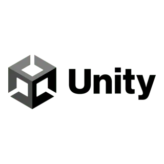

Musée - technologie numérique

Description
Le module VR propose à l’utilisateur une visite immersive dans un musée virtuel consacré à l’histoire et à l’évolution des technologies numériques. Ce musée interactif a été conçu comme un espace calme, structuré et accessible, favorisant l’exploration, l’écoute et l’observation. L’environnement du musée a été pensé pour guider l’utilisateur dans une découverte progressive des différents aspects du numérique. En se déplaçant librement dans l’espace virtuel, le visiteur peut observer des objets technologiques, découvrir leurs caractéristiques et écouter des histoires, bruits, sons. Ce dispositif permet de donner une dimension spatiale et immersive aux contenus du projet, en transformant des témoignages et les objets en éléments interactifs d’une scénographie virtuelle.